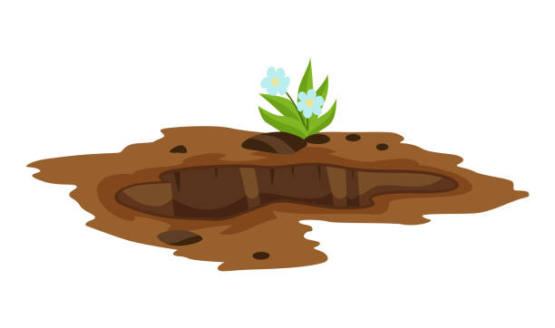

Anathema
About this project
Summary
Basics – What is this game?
Blue’s Crew RPG is, well, an RPG that is “split” between multiple things.
You can use it as a single player datapack or as a multiplayer one if you have a server.
You can also join [Insert IP] server to play it as an MMORPG.
It is more advanced here, as we’re using a plugin AND a datapack.
The goal of this RPG is to totally revamp all vanilla Minecraft’s aspects.
(Combat, Mining, Chopping Trees, Exploration...)
and also adding more aspects.
We want players to almost NEVER get bored.
Main lore
Before telling the lore, take a look at the “Blue’s Realm” map, the world of our RPG:
When the hero(es) join the world, the world is already in a bad situation.
He(they) need(s) to remove this curse.
Soren the Malevolent Giant, has Blue’s Realm under his influence.
He lives on his archipel, protected by a shield.
The hero(es) need to stop him.
Blue’s Realm is composed of 6 main islands and 3 less important islands.
- Tollams Reef is where you start your adventure, it is a plain island, the most peaceful one.
- Valhesia is the second island, it is filled with mountains. It is said that mountains magically raise every year.
- Harenasia is the third island, the desert one. It is filled with sand and dunes. Be aware of quicksand.
- Vulcahala is the volcanic area. Long ago, here, the Mount Tilus, the biggest volcano of Blue’s Realm, erupted and burnt the island. The only trees are burnt. The only form of life are monsters that started adapting to this environment.
- Frigus Enclave is the fifth main island. Here, it is so cold that even fire monsters could burn. Even in summer, temperatures here can get to -30°Celcius. Wear a very thick fur coat or suffer consequences.
- Soren’s Archipel is the last island. Here lives the villain, the most horrific monster, Soren, the Malevolent Giant. He lives in his enormous castle, composed of multiple towers, big walls, and guards waiting for any enemy to come.
- Chalice Isles, Brighford Islet and Sceledrus’ Bay are the 3 side islands. Most villages and cities are built here, since no bane threatens these islands.
Soren has 5 Generals, that are ranked here from weaker
to stronger.
- Patetus, The Crazy Doom (Lives in Tollams Reef)
- Mons, The Lord of Darkness (Lives in Valhesia)
- Cactaca, The Spiky Horror (Lives in Harenasia)
- Vulcus, The Burnt Terror (Lives in Vulcahala)
- Frigus, The Frozen Giant (Lives in his Enclave)
Each island is under the influence of its living general.
Occasionally, they will cast powerful spells on the
entire island, causing it to encounter a malevolent event
for a short amount of time, modifying things on the
island, such as monsters, people, weather, and much
more.
They also put a gigantic magic shield around each
island, preventing any entry or exit in or out of them.
When the hero(es) defeat(s) a general, the respective
island gets its magic shield removed, no malevolent
events can happen here anymore, and monsters become
instantly less powerful.
Beating a general will also
weaken Soren’s shield.
Exploration
First, the map of this RPG is an Open
World (4800 by 4800 blocks!).
That way, it’s very easy to add a lot of stuff.
Exploration is one of the aspects of this RPG:
Since the map is so big, traveling across it is a very unique experience. The map is always the same (Never gets
randomly generated). Although, most buildings or special little areas WILL be randomly generated. (mines, secret passages, houses...)
All these areas contains different things:
- Different Mobs
- Different Animals
- Different Background effects. (Birds, butterflies, etc...)
Exploring is the main way to get geared up. You will find A LOT of secret areas, with chests, that you can
loot. The rewards can be extremely helpful, so it is worth looking for them :D
While walking around, you’ll notice also
some bigger structures:
- The Main Village (Always in the center of the map)
- Small houses with one or multiple NPCs selling stuff or giving you quests.
- Buildings Hiding hostile mobs. Beating all the mobs in this building will reward you for strong gear!
- Mines (See MINING)
- Small Forests.
Combat
The combat system is also totally revamped!
Damage will no longer be based on strength potions or Attack Damage on weapons:
It will depend on WAY MORE stats!
Let’s get through them after talking about classes.
Classes come in 4 variants that the player chooses when joining the game:
- Warrior
- Ranger
- Rider
- Sorcerer
They can then each derive in other classes that the player can choose, kind of like a skill tree:
- Warrior derives to Legionary, Swordsman or Barbarian.
- Ranger derives to Sentinel, Archer or Poisoner
- Rider derives to Headless Horseman, Holy Rider or Animal Expert
- Sorcerer derives to Smart Sorcerer, Healmancer or Wizard
Each class has passive abilities:
- Warrior and Swordsman: Increased Sword-type weapons damage (Swordsman increases more)
- Legionary: Increased Spade-type weapons damage
- Barbarian: Increased Battleaxe-type weapons damage
- Ranger and Archer: Increased Arrow damage (Archer Increases more)
- Shadow Assassin: Increased Item Throwing damage
- Poisoner: Arrows Poison Enemies.
- Rider and Holy Rider: Increased summon animals damage (Holy Rider increases more)
- Headless Horseman: Increases melee damage while riding your horse.
- Animal Master: Increases the maximum amount of animals you can summon and slightly increase their damage (less than Holy Rider’s perk)
- Sorcerer and Wizard: Increased Spell damage (Wizard Increases more)
- Smart Sorcerer: Decreases mana cost
- Healmancer: Spells that heal players are more efficient and slightly increases spell damage
On top of that, 3 Elements Ecosystems exist, each composed of 3 elements that are each other’s weaknesses.
It’s a triangular element formation.
The different elements and their ecosystems are:
- Ignis
- Terra
- Aqua
- Lux
- Tenebris
 Aer
Aer
- Mortuus
- Victuus
- necromancy
Hitting an enemy with a weapon whose element is strong against the enemy’s element will cause the final damage to be multiplied by 1.6
However, if the enemy’s element is stronger against the weapon’s element, the damage will be multiplied by 0.4
For example, if you normally deal 100,000 damage, hitting an “Aer” mob with a “Tenebris” weapon will deal 160,000 damage.
However, if you hit a Lux mob with the same weapon, you will deal 40,000 damage.
Hitting an element that isn’t strong against/weak against your weapon’s element will do nothing.(Hitting an Ignis mob with a Tenebris weapon will do 100,000 damage, as intended)
Now, onto stats:
Some stats are “universal” meaning that every class can have them. Some are only for some classes. We’re gonna start with the universal ones.
There are 2 types of COMBAT stats:
"Normal" stats, can be between 1 and Infinity. (or has a very high cap)
- Health (Well, you know what that is)
- Srength (Increases outgoing damage)
- Defense (Reduces incoming damage)
- Weapon’s Sharpness (Increases damage, but the more “Skin Hardness” the mob has, the less effective it is.)
- Enrage Damage (How much more damage you deal when Enraged)
- Greed (Mobs drops more loot {coins, items...})
- Energy (Lost when doing actions, then regenerates when walking or not moving)
- Velocity (How fast you move)
And there are “0-100” stats. These are stats that are capped at 100 and can be 0.
- Enrage Chance (Chance to get the enraged state when being hit. Being enraged means that your next hit will be more powerful.)
- Dual Strike Chance (% chance of striking twice on a mob.) (Basically a critical hit, but better)
New Resource Gathering System
This aspect of vanilla Minecraft is also changed! You can only gather resources in certain areas. We’ll go over the different resources and how to gather them:
Mining
You can find every vanilla ore on each island, although every island has its own custom ore:
- Tollams Reef
 Corlucite
Corlucite - Valhesia Otroytine
- Harenasia Tothuatine
- Vulcahala Feplaitine
- Frigus enclave Proanyx
- Soren’s Archipel Ekryx
Only certain pickaxes can mine these ores. You’ll need to have the pickaxe made of the previous island’s ore (or stronger). For tollams Reef, you will only need a diamond pickaxe.
To enter a mine, you will need to explore islands. You will eventually find a Mines Entrance Keeper. Talking to him will open a menu, leading to a teleport to the mines. Mines are randomly generated. The generation is “room based”, which means there are between 15 and about 20 rooms, all separated by corridors.
Events can happen in these mines. They trigger every 10 minutes :
- Mine Boost Grants Haste II for the entire
- Infestation Rock Bugs infest the mine.
- Powder Buff Gain more Magic Powder when mining ores. (See MINING)
Foraging
For chopping trees, it can only be done in certain areas. These areas are forests, a Lumberjack house will always spawn nearby.
No custom wood types exist, the trees just have a custom shape.
You cannot chop trees like vanilla.
Firstly, the trees are thicker, and you can’t really break its blocks, just make holes in them.
Once you break a log, a new one will spawn with a hole on it, a piece of wood will drop, and you can’t mine this log unless you have a good enough axe.
4 “piece of wood” items craft a wood plank, for instance.
Each log blocks have a hardness level.
This level decreases by one every time the block is broken.
Once it reaches 0, the block actually breaks.
Once enough log blocks are broken, the tree will break entirely, dropping ALL the logs.
Fishing
Fishing is also changed in this RPG. You will need baits.
What you fish is not the same everywhere: For example, near Valhesia, you fish rocks, normal fish, etc.
When you throw the hook, you wait until something comes.
When reeling the hook, you won’t catch anything at first.
The item will float above the water, and information will be written above it:
Its name, the amount of items there are, and it will ask you if you want to catch that or not. If not, the item will be destroyed.
Weaponry
The Forge
The forge is one of the ways to get weapons.
Here, you can refine ores, make weapons, modify them, or salvage them.
To create a weapon, choose one of the 11 materials, and one of the 6 types.
The materials are:
- Copper
- Iron
- Gold
- Diamond
- Emerald
- Corlucite
- Otroytine
- Tothuatine
- Feplaitine
- Proanyx
- Ekryx
The types are:
- Pickaxe
- Sword
- Battleaxe
- Scythe
- Staff
- Warhammer
You can modify a weapon’s material after creating it, or salvaging it for half of the material cost back!
Enchanting
Enchanting also changed!
We wanted to make enchanting a really late game feature.
It really adds a small boost to the weapon, but it shouldn’t be OBLIGED to have that in order to progress.
In order to enchant items, you will need an Arcanic Table.
This replaces the vanilla enchanting table.
Then, you will need Paper Scrolls. Craft them with 3 pieces of paper using said Arcanic Table.
You will get an Empty Paper Scroll, you need to imbue it with an enchantment.
To do that, put the paper scroll and the materials required to craft the enchantment in the table.
Then, you can apply an Element Nucleus (rarely obtained from mobs), which will tell the Scroll’s Element.
For example: a paper scroll, an Ignis Nucleus, 3 feathers, 4 silex and 1 arrow will make an “Ignis Enchant Scroll” imbued with the “Archery” enchant, which increases the damage dealt by arrows.
To level up the enchantment, it’s similar to vanilla, combine an Ignis Enchant Scroll with the archery enchant with a weapon with the same enchant to increase its level (1+1=2, 2+2=3, 3+3=4, etc.)